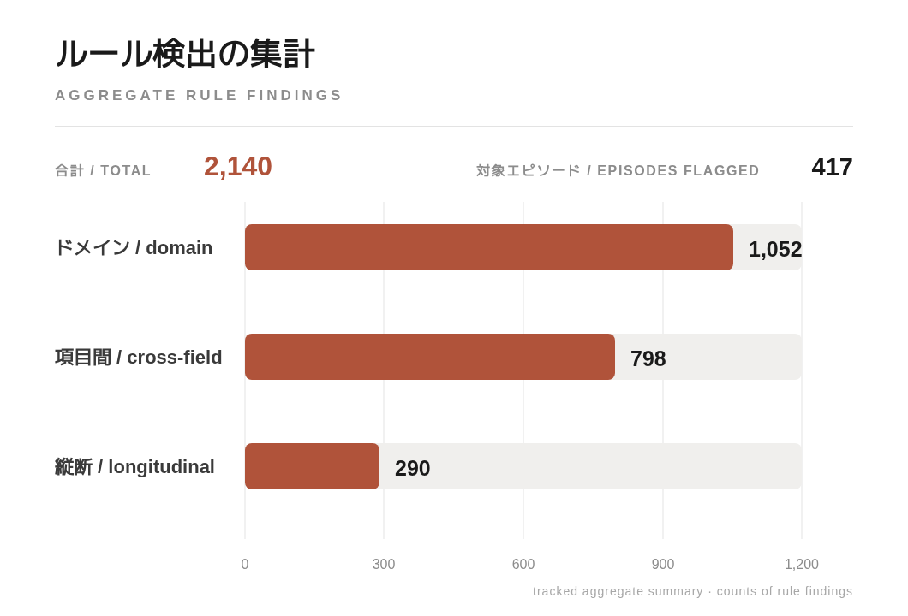

目的： 脊髄損傷リハビリのための、日本語・英語対応の分析・予測パイプライン。
目的： 脊髄損傷リハビリのための、日本語・英語対応の分析・予測パイプライン。
Purpose: a Japanese/English analytics and prediction pipeline for spinal-cord-injury rehabilitation.
schema/*.yaml で管理される。schema/*.yaml で管理される。cp932 で読み、_ / NT / NA / ND を欠損として正規化する。cp932 で読み、_ / NT / NA / ND を欠損として正規化する。cp932 and normalize _ / NT / NA / ND as missing values.0day を起点に、72h → 2w → 4w の順で最初の非欠損値を補う。0day を起点に、72h → 2w → 4w の順で最初の非欠損値を補う。0day, then take the first non-null value from 72h → 2w → 4w.SCIM-III の4回帰、ISNCSCI 変化量の5回帰、退院 AIS、在院日数。SCIM-III の4回帰、ISNCSCI 変化量の5回帰、退院 AIS、在院日数。